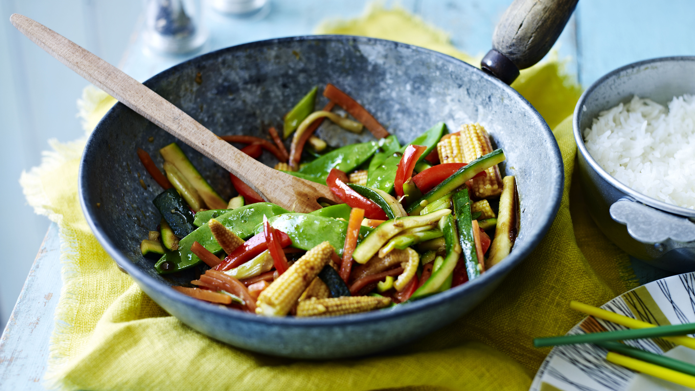

BitCook
Send your recipe
Healty and delicius recipes
Our best recipes
Simple Tomato and Basil Bruschetta
Total: Approximately 15 minutes.
Preparation: 10 minutes.
Cooking: 5 minutes.
Chicken with Roasted Vegetables
Total: Approximately 50 minutes.
Preparation: 30 minutes.
Cooking: 25 minutes.
Avocado Toast
Total: Approximately 10 minutes.
Preparation: 5 minutes.
Cooking: 5 minutes.
Simple Pasta Aglio
Total: Approximately 15 minutes.
Preparation: 5 minutes.
Cooking: 10 minutes.

Quick and Easy Veggie Stir-Fry
Total: Approximately 20 minutes.
Preparation: 10 minutes.
Cooking: 10 minutes.
Easy Caprese Salad
Total: Approximately 10 minutes.
Preparation: 10 minutes.